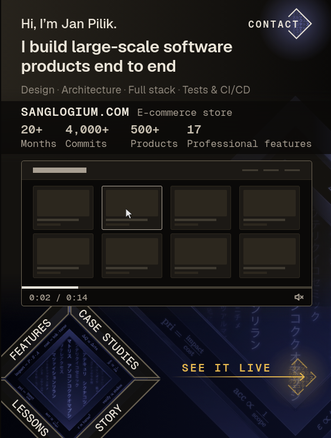

Single frame, judged on its own. Everything below comes from what is visible in the screenshot — no code, no live site, no other mockups.
The execution is genuinely above average for a dev portfolio — real restraint, a real signature. But the largest element is empty, the proof numbers measure effort instead of outcomes, and the loudest button on the page sends the visitor away. Four of the ten metrics are failing, and they are the four that decide whether you get an email.

Exactly one amber element on the whole screen. Almost every dev portfolio sprays its accent across six things. This one didn't — that restraint is the hardest part to teach.
Chrome bar, progress fill, tabular 0:02 / 0:14, moving cursor. It reads as a real product in use without needing a real screenshot. Tasteful and convincing.
The diagonal diamond axis gives the screen a memorable shape. Most developer portfolios are stacked rectangles you forget on close. This one you'd recognise again.
The only amber element on the screen is a link that sends the visitor off to a store, with no return path. CONTACT — the action that actually wins work — is plain white text with no container, no color, no weight.
Why it hurts: you spent your entire accent budget on the one action that ends the session on your site.Flip the emphasis. Give CONTACT the amber treatment (the filled diamond already exists as a state — just make it the resting state) and demote SEE IT LIVE to a quiet text-plus-arrow.
Better: add a third, dominant action with a verb and a stake — Hire me or Book a 20-min call — and let both current links be secondary.
A faint hairline rail and a floating word. No enclosed hit area, so there is no way to tell whether the word, the arrow, or the end diamond is the target. The satisfying amber-fill state is bound to hover, which does not exist on the device this screen is designed for.
Why it hurts: an ambiguous affordance on the primary action is a direct, measurable drop-off — and the best interaction in the design is invisible to every mobile visitor.Bound it: 4px-radius rect, 1px amber at full opacity, minimum 44px tall, with the diamond as an end cap inside the shape rather than floating past it.
Mirror every hover rule with :active and :focus-visible so touch gets the same feedback.
Right now it is a grey wireframe of a product grid. Filled with real footage it barely improves: a full desktop catalogue squeezed into this width makes every product card roughly a thumbnail, and every label inside it sub-pixel. It can only ever say "a website exists."
Why it hurts: hierarchy inversion. Largest area, lowest signal — and a buyer scanning for five seconds spends most of them on it.Change the footage, not just the fill. Drop the whole-page view; shoot tight 1-up crops of one interaction at 2–3× zoom — a filter applying, a checkout step completing, an admin save — so something is actually readable at thumb size.
If the footage can't be made legible, shrink the panel and give the space back to the headline and the proof row.
Four labels at ±45°, two of them reading downhill, set on top of the diamond's own katakana texture, at roughly 13px on a real phone. The diamond's left vertex is cut off by the screen edge, so FEATURES and LESSONS start in the margin. The tap targets are triangles with no affordance cue.
Why it hurts: rotated text costs real reading speed. On the one screen that decides whether someone scrolls, you are charging cognitive rent for ornament.Separate the ornament from the menu. Keep the diamond as a graphic, pull it fully on-canvas, and move the four labels out into an upright mono list beside it.
If the diagonals are non-negotiable, keep only the two uphill ones, raise the type to 14px+, and put them on a solid untextured fill.
The H1 is about 1.4× the size of the greeting above it, and lands around 19–20px on a real phone. Strong portfolios run hero type at 32–40px on mobile — a 2.5–3× ratio over any label.
Why it hurts: the first thing the eye weighs is a salutation, not what you do.Push the H1 to 2.5–3× the greeting. Demote "Hi, I'm Jan Pilik." to a small mono eyebrow — or cut it entirely and put the name in a wordmark where it belongs.
Commits count keystrokes. Months count duration — which can just as easily read as slow. "17 Professional features" uses a filler adjective and an arbitrary number. Only "500+ Products" tells a buyer anything they care about. The row is also visibly uneven: the gap before 17 is wider than the gap after 20+.
Why it hurts: a technical buyer discounts vanity metrics instantly — and once they discount the numbers, they discount the claim above them too.Three strong numbers beat four weak ones. Use things someone pays for: orders processed, p95 load / LCP, uptime, payment and shipping integrations shipped, Lighthouse score.
Equalise the columns and cut every label to one word so they can stay equal.
The amber fills and inverted labels only fire on hover — which no phone has. CONTACT's tap area is roughly 36px tall, under the 44px minimum. Nav labels sit near 13px, rotated, on textured ground. The dot separators in the skills line are far below any contrast floor.
Why it hurts: the most polished moments in the design never happen for the audience this layout was built for.Mirror hover with :active and :focus-visible. Floor every tap target at 44px. Raise the nav labels. Lift the separator dots or drop them.
"Large-scale" sets an enterprise expectation, and the proof directly below it is one solo e-commerce store. The reader resolves the mismatch against you.
Why it hurts: claim-versus-evidence gaps are the fastest way to lose a careful reader — and careful readers are the ones with budget.Claim exactly what you can prove and let it be impressive on its own terms: "I design, build and ship production systems end to end — solo." Shipping a real store alone is already a strong story. Don't inflate it.
The side margin, the headline-to-strip gap, the strip-to-video gap and the video-to-nav gap are all different numbers with no relationship. The stat columns are hand-tuned to uneven widths. The layout is painted, not gridded.
Why it hurts: this is the one flaw that specifically contradicts the design's own claim of technical precision — and it is the first thing another designer notices.Pick one base unit and snap every gap, margin and column to a multiple of it. No exceptions, no "just 3px here." The rhythm is the whole point of this aesthetic.
The screen presents as a sealed card. Worse, the four-way nav diamond implies the sections are reachable by tap, which actively suggests there is nothing below.
Why it hurts: if there is more page, a real share of visitors will never find out.Let something cross the bottom edge — the top sliver of the next section is the strongest cue. A single mono ↓ marker is the cheap version.
A warm wash up top, a darker band behind the stats with a hard full-width seam, then a cold indigo gradient bottom-right. The indigo is the only cool temperature on the page and has no reason to be there.
Why it hurts: it breaks the "one object" illusion that makes a single-viewport composition feel designed rather than assembled.One surface temperature. Kill the indigo or pull it toward the amber family. Soften the seam under the stats so the strip sits on the same ground as everything else.
The only identity on the page is a name inside a sentence. No mark, no monogram, no anchor.
Why it hurts: part of a portfolio's job is being nameable after the tab closes.The diamond already is a monogram. Put a small one top-left as the mark and let the name live there instead of in the copy.
Four diamonds in one viewport. Past about three, a signature shape stops being a signature and becomes wallpaper.
Why it hurts: it dilutes the one element that makes this design memorable.Cut to two: one ambient/structural, one interactive. Scarcity is what made the amber work — apply the same rule to the shape.
Fragments like pri = impact and acc α scope are legible enough that the eye tries to read them — directly around the primary action.
Why it hurts: half-readable ornament is the worst kind. It costs attention and returns nothing.Push ornament clearly below the legibility threshold, or keep an exclusion zone around the CTA. Texture or content — never in between.
The diamond's left vertex crosses the final letter of CONTACT; its right vertex is clipped by the screen edge. The blue-purple glow behind it is also the only cool light in the upper half.
Why it hurts: a visible collision in the first 40px undercuts the precision claim before a single word of the pitch is read.Pull the diamond fully on-canvas and clear the label off the vertex — or set the label inside the diamond and let the shape be the button.
What it signals about you: genuine craft obsession, unusual restraint, deep comfort with low-level layout. It also signals someone more invested in the frame than the contents — the largest surface is empty and the proof is four soft numbers. A buyer reads that as "beautiful shell, now show me the work."
Against the top tier: strong portfolios win on one of two axes — maximum proof density that reads in two seconds, or one unforgettable interaction. This sits between them: ornate enough to slow comprehension, not ornate enough to be the thing people remember. Pick a side and commit.
The good news: five of the six highest-impact fixes are low effort — enlarge the headline, swap the metrics, bound the CTA, flip which action gets the amber, and soften the claim. None of them touch the parts that are actually good.
Scored from a single static frame. Responsiveness and performance are inferred and flagged low-confidence; the overall 4.6 is the mean of the eight metrics a still image can honestly support.